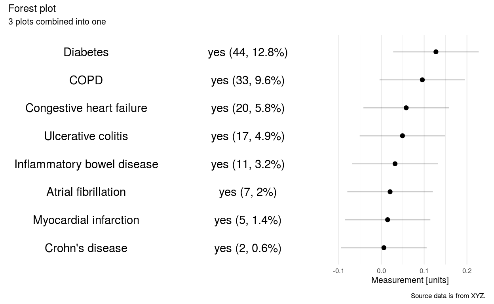

Looking at different options to produce forest plots.
library(rmarkdown)
library(ggplot2)
library(dplyr)
library(tidyr)
library(readr)
library(here)
library(patchwork)
theme_set(theme_minimal(base_size = 8))
#theme_set(theme_linedraw(base_size = 8))Use ggplot and patchwork to combine plot and table objects in to forest plots, meta-analysis, grables, etc.
A forest plot is a table with a visual component i.e. a dotplot with uncertainty displaying summary/aggregated statistics (e.g. mean and 95% CI, median and 2.5th and 97.5th percentile of a posterior distribution) per row. The table may be a colection of columns or nested columns displaying the label per row, summary statistics and inferential statistics.
See here for an example of layouts:
Can have nested columns (block by treatment) Can have nexted rows (categories by factor or subgroup, study, etc. )
Table is a coordinate system columns and rows which are cells. Need to arrange / process data then have numbers or text then render as text or symbols. Text is symbols. Could do both.
Render using ggplot, format tables, whatever is there
What does our package handle. The transform step?
Broom - tidy estimates?
Is this more than one package? Is this a wrapper only?
Check tidymeta which renders table and plot in ggplot https://github.com/malcolmbarrett/tidymeta
gt may this option:
https://cran.r-project.org/web/packages/meta/
Data is a summary of medical history measured at diagnosis:
crs <- read_csv(here("data","med_hist.csv"))Calculate the number of patients.
bigN <- nrow(crs)
print(bigN)
[1] 345Process steps:
TODO: Change dataset examples.
a_crs <-
crs %>%
select(id, chf, afib, diabetes, mi, copd, crohn, ulcercol, ibd) %>%
pivot_longer(-id, names_to = "comorb", values_to = "value") %>%
mutate(
comorb = case_when(
comorb == "chf" ~ "Congestive heart failure",
comorb == "afib" ~ "Atrial fibrillation",
comorb == "diabetes" ~ "Diabetes",
comorb == "copd" ~ "COPD",
comorb == "mi" ~ "Myocardial infarction",
comorb == "crohn" ~ "Crohn's disease",
comorb == "ulcercol" ~ "Ulcerative colitis",
comorb == "ibd" ~ "Inflammatory bowel disease"
),
value = case_when(value == "0" ~ "no",
value == "1" ~ "yes")
) %>%
group_by(comorb, value) %>%
summarise(n = n()) %>%
mutate(
inc = n / bigN,
perc = n / bigN * 100,
plot_lab = paste0('(', n, ', ', round(perc, digits = 1), '%)'),
axis_lab = paste0(value, ' ', '(', n, ', ', round(perc, digits = 1), '%)')
) Create two example table columns.
col_1 <-
a_crs %>%
filter(value == "yes") %>%
ggplot(aes(reorder(axis_lab, inc), 1, label = comorb), hjust = 0) +
geom_text() +
coord_flip() +
theme(
panel.grid.minor = element_blank(),
panel.grid.major = element_blank(),
axis.title = element_blank(),
axis.text = element_blank()
)
col_1
col_2 <-
a_crs %>%
filter(value == "yes") %>%
ggplot(aes(reorder(axis_lab, inc), 1, label = axis_lab), hjust = 0) +
geom_text() +
coord_flip() +
theme(
panel.grid.minor = element_blank(),
panel.grid.major = element_blank(),
axis.title = element_blank(),
axis.text = element_blank()
)
col_2This is an example of a dot plot with uncertainty.
col_3 <-
a_crs %>%
filter(value == "yes") %>%
ggplot(aes(reorder(axis_lab, inc), inc)) +
geom_point() +
geom_linerange(aes(ymin = inc - 0.1, ymax = inc + 0.1), alpha = 0.2) +
coord_flip() +
theme(
panel.grid.minor.y = element_blank(),
panel.grid.major.y = element_blank(),
axis.title.y = element_blank(),
axis.text.y = element_blank()
) +
ylab("Measurement [units]")
col_3This is messy but illustrates this can be achieved.
We are combining columns to form a dummy forest plot.
plot <- col_1 + col_2 + col_3
plotUsing this approach, will rows always been aligned?
Annotated version
plot + plot_annotation(
title = 'Forest plot',
subtitle = '3 plots combined into one',
caption = 'Source data is from XYZ.'
)
sessionInfo()
R version 3.6.0 (2019-04-26)
Platform: x86_64-pc-linux-gnu (64-bit)
Running under: Ubuntu 16.04.6 LTS
Matrix products: default
BLAS: /usr/lib/atlas-base/atlas/libblas.so.3.0
LAPACK: /usr/lib/atlas-base/atlas/liblapack.so.3.0
locale:
[1] LC_CTYPE=C.UTF-8 LC_NUMERIC=C
[3] LC_TIME=C.UTF-8 LC_COLLATE=C.UTF-8
[5] LC_MONETARY=C.UTF-8 LC_MESSAGES=C.UTF-8
[7] LC_PAPER=C.UTF-8 LC_NAME=C
[9] LC_ADDRESS=C LC_TELEPHONE=C
[11] LC_MEASUREMENT=C.UTF-8 LC_IDENTIFICATION=C
attached base packages:
[1] stats graphics grDevices utils datasets methods
[7] base
other attached packages:
[1] patchwork_1.0.0 here_0.1 readr_1.3.1 tidyr_1.0.0
[5] dplyr_0.8.3 ggplot2_3.2.1 rmarkdown_2.0
loaded via a namespace (and not attached):
[1] Rcpp_1.0.3 pillar_1.4.3 compiler_3.6.0
[4] tools_3.6.0 zeallot_0.1.0 digest_0.6.23
[7] evaluate_0.14 lifecycle_0.1.0 tibble_2.1.3
[10] gtable_0.3.0 pkgconfig_2.0.3 rlang_0.4.2
[13] distill_0.7 yaml_2.2.0 xfun_0.12
[16] withr_2.1.2 stringr_1.4.0 knitr_1.26
[19] hms_0.5.3 vctrs_0.2.1 rprojroot_1.3-2
[22] grid_3.6.0 tidyselect_0.2.5 glue_1.3.1
[25] R6_2.4.1 farver_2.0.2 purrr_0.3.3
[28] magrittr_1.5 scales_1.1.0 backports_1.1.5
[31] htmltools_0.4.0 assertthat_0.2.1 colorspace_1.4-1
[34] labeling_0.3 stringi_1.4.5 lazyeval_0.2.2
[37] munsell_0.5.0 crayon_1.3.4 https://www.littlemissdata.com/blog/prettytables https://bookdown.org/MathiasHarrer/Doing_Meta_Analysis_in_R/layouttypes.html